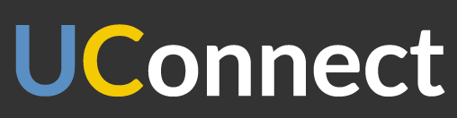

UConnect Mobile App Design
March 17, 2013
Winner, College Ready Hackathon, Berkeley, CA
Overview
Team Edventure: Brittany Cheng, Samir Makhani, Aatash Parikh, Carl Shan, and Marissa Teitelman.
During a one-day hackathon, we designed and pitched the user interface and experience for UConnect, a mobile peer advising and mentorship app.
Hackathon Goals
- Target one or more student groups: K-12 students and their families; 9-12 high school students planning to apply to the UC system; and Community College transfer students planning to apply for transfer to UC
- Prepare students to apply directly from high school or by transfer from community college
- Focus on mobile apps and games that run on smart phones (based on html5) or text alert capability for feature phones
- Include outcome metrics
Process
- Interacted with mentors and students present at the hackathon to understand the problems we wanted to solve
- From quick user research and our own experiences with mentors in high school, decided to create a mentoring application to connect high school students with UC students who could provide basic advice and mentorship
- Sketched out user flow of mobile app from both mentor and mentee perspective
- Used Adobe Photoshop and Illustrator, as well as the flat design toolkit, to quickly mock up various screens
- Used InVision App to link screens together into presentable and testable prototype
Final Designs